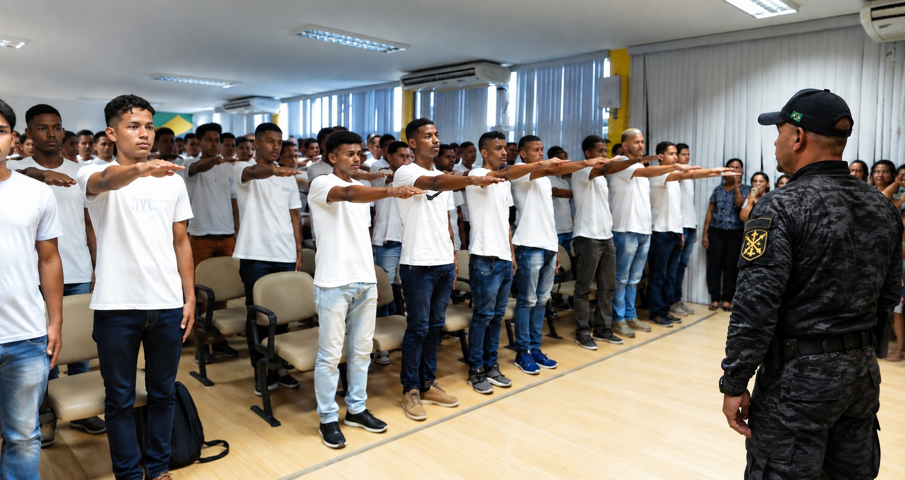

DISCIPLINA • RESPEITO • FOCO • LIDERANÇA
Jovens mais fortes
para um Brasil
melhor.
O Projeto Jovem Militar é uma escola preparatória que desenvolve disciplina, formação e cidadania, preparando jovens para os desafios da vida.
CONHEÇA O PROJETO →CARÁTER
DISCIPLINA
CONQUISTAS
SEMPRE
DISCIPLINA
CONQUISTAS
SEMPRE
✦DISCIPLINApara a vida
◆FORMAÇÃOde qualidade
▰CIDADANIAe valores
◈UM FUTUROmelhor
INSTITUIÇÕES QUE NOS INSPIRAM
Exemplos que fortalecem nossa missão
Instituições que representam referências de disciplina, serviço à sociedade e compromisso com o Brasil.
 EXÉRCITO
EXÉRCITO MARINHA
MARINHA FORÇA AÉREA
FORÇA AÉREA POLÍCIA MILITAR
POLÍCIA MILITAR POLÍCIA CIVIL
POLÍCIA CIVIL POLÍCIA PENAL
POLÍCIA PENAL GUARDA MUNICIPAL DE SÃO MATEUS
GUARDA MUNICIPAL DE SÃO MATEUS“Disciplina hoje,
mais oportunidades amanhã.”
JOVENS
DISCIPLINA
CIDADANIA
BRASIL
SEMPRE
DISCIPLINA
CIDADANIA
BRASIL
SEMPRE
FALE CONOSCOProjeto Jovem Militar
Projeto Jovem Militar
Comando Geral
Escola Preparatória Pré-Militar do Espírito Santo.
ENDEREÇOAvenida Coronel Mateus Cunha, 740
WHATSAPP(27) 99731-0707
E-MAILpjmcmdgerales@gmail.com